Case 2.22 — The Broken & Mixed Parking Garage
A parking structure that cannot be mapped twice.
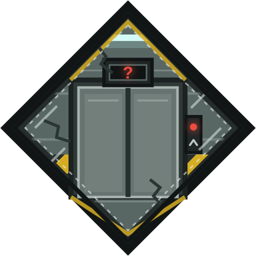
Environmental hazards and sudden layout changes are possible.
Reliable maps, fixed routes and permanent bases are not considered viable.
No conventional entities are confirmed. The level itself behaves anomalously.

Description
Level 2.22, commonly referred to as “The Broken & Mixed Parking Garage,” is an unstable parking-garage environment composed of concrete floors, ramps, columns, elevator shafts, stairwells, maintenance corridors and utility spaces. Its most common appearance resembles an early-2000s public parking structure illuminated by cold blue-white fluorescent fixtures. This appearance is not permanent.
The level is usually empty. No parked vehicles are known to appear, even when the structure generates ticket booths, reserved parking spaces, painted arrows, accessible spaces, wheel stops, mirrors, speed bumps or security areas. The absence of vehicles is consistent enough to make otherwise ordinary sections feel unnaturally vacant.
Some floors are relatively clean and maintained. Others appear decades older, heavily stained, neglected, partially flooded or unfinished. Architectural styles may shift from one floor to the next, and sometimes within a single aisle. Sections resembling garages from the late 1970s, the 1980s, the early 2000s and the modern day have all been documented.
The ceiling height is inconsistent. In some areas, the overhead space is low and oppressive. In others, exposed pipes, sprinkler lines, conduit, drainage systems, cable trays, vents and hanging wires occupy unusually tall ceilings. Active leaks can begin without warning and may stop just as abruptly.
Layout-changing anomaly
Level 2.22 does not appear to possess a single permanent floor plan. Its layout changes between entries, and it may also change while a wanderer is still inside. The number of floors, placement of elevators, condition of the building, presence of ramps and stairwells, and existence of outside areas can all differ.
The structure sometimes behaves like a finite parking garage with a limited number of levels. On other occasions it appears to continue far beyond any plausible size. Attempts to create a reliable map have failed because a route may lead to a different floor, corridor or exterior region when retraced.
Elevator displays, painted signs and stairwell labels may use ordinary numbering such as B3, B2, B1, G, 1, 2 and 3. They may also show repeated numbers, missing numbers or impossible labels such as -0, B∞, VOID or a blank display.
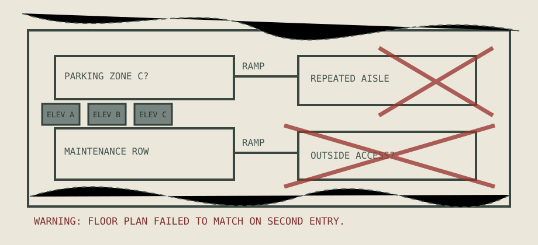
Known environmental variations
The level changes too frequently for its regions to be treated as permanent zones. The following configurations are recurring patterns rather than fixed destinations.
| Variation | Description | Reliability |
|---|---|---|
| Early-2000s garage | Concrete structure, cold fluorescent lighting, painted pillars, ordinary parking lines, exposed pipes and public-use elevators. | Most frequently observed baseline. |
| Older structural layer | Sections resembling late-1970s or 1980s garages, often with worn signage, older fixtures and darker utility corridors. | May replace an ordinary floor without warning. |
| Modern neglected layer | Newer architectural features in poor condition, sometimes including inactive security booths, access gates and discolored lighting. | Usually temporary. |
| Maintenance regions | Electrical rooms, utility closets, storage cages, service corridors and damaged wall panels. Hidden passages may exist behind removable panels or doors. | Common, but placement changes. |
| Outside area | An opening leading to an exterior region. The appearance varies and cannot be used to determine whether the exit is genuine. | Potentially useful, potentially misleading. |
| False exit region | An apparently convincing ground-level exit, lobby or exterior route that may loop back into another garage floor. | Highly unreliable. |
Stairwells are similarly unstable. A stairwell may connect floors normally, loop back to its point of origin, terminate unexpectedly or open into a floor whose signage does not match its physical position. Straight parking ramps exist, but elevators remain the most important way to travel between major sections.
Elevators
Elevators are among the most recognizable and important features of Level 2.22. Multiple elevator systems may appear across the structure. Their placement, age, number of landings and condition are inconsistent, but passenger, service and hydraulic-style elevators have all been observed.
Some elevators operate normally. Others require power restoration, repairs or access through nearby maintenance areas. Cars may stop at floors that should not physically exist, open on the opposite side from the expected landing, or display a label that does not correspond to any documented floor.
Common elevator-related features include:
- Passenger elevators with automatic center-opening doors.
- Older service elevators with worn interiors and audible mechanical operation.
- Low-rise hydraulic-style elevators serving a limited portion of the structure.
- Explorable elevator pits, shafts, machine spaces and top-of-car access areas.
- Damaged or unfinished elevator installations with exposed rails, panels and loose components.
- Hall call buttons, floor indicators, emergency fixtures and control panels that may behave inconsistently.
It is unknown whether the elevators merely respond to the level's changing architecture or actively contribute to it. No conclusion has been reached.
Hazards and random events
No conventional hostile entities have been confirmed in Level 2.22. The primary danger is environmental instability. The level itself is often described as entity-like because its layout cannot be permanently mapped and appears to change independently of any visible cause.
| Event | Observed behavior |
|---|---|
| Independent light failure | Individual fluorescent fixtures flicker, buzz, die or recover at random. |
| Zone blackout | Entire sections lose power temporarily. A blackout may move across a floor in sequence. |
| Water leak | Puddles, ceiling drips or active leaks may appear in previously dry sections. |
| Elevator fault | Doors may obstruct, call buttons may stop responding, leveling may fail or a car may stall between floors. |
| False route | A ramp, stairwell, maintenance door or outside access route may return to a different area than expected. |
| Architectural replacement | A section may appear older, newer, cleaner, more damaged or structurally unfinished after it is revisited. |
The strongest warning sign is often a small inconsistency: a floor number that changed, a sign with the wrong zone letter, a puddle where the floor was dry, a new elevator door or a familiar lobby with slightly different lighting.
Bases, outposts and communities
No permanent bases, outposts or communities are known to exist in Level 2.22. Any attempt to create a long-term settlement is presumed to be impractical because the level's layout-changing anomaly prevents reliable access to stored supplies, shelter, routes and exits.
A room that appears defensible during one visit may move, disappear, become inaccessible or open into a different region later. Temporary rest stops may be possible, but none should be treated as permanent.
Entrances
- Entering an elevator on Level 3 — “Electrical Prison”, Level 92, Level Gold or Secret Level — “The Elevator Shaft” may lead to Level 2.22.
- Finding a rusted-out door on Level 19 normally sends a wanderer to Level 20, but in some cases it may instead lead to Level 2.22.
Exits
- Finding an outside area and wandering into a thick forest region may send a wanderer to Level 10.1, Level 996 or Level 63 — “Homely Pine Forest.” The appearance and layout of the outside area do not appear to matter.
- Finding a strangely discolored wall anywhere in the level and noclipping into it normally sends a wanderer to Level 1. Other possible destinations include Level 188 and Level -2.
Archive render log
The following rendered archive frames represent documented or plausible configurations of Level 2.22. They should be treated as visual records only. Their order does not describe a navigable route, and no image should be interpreted as evidence that the same configuration can be found twice.
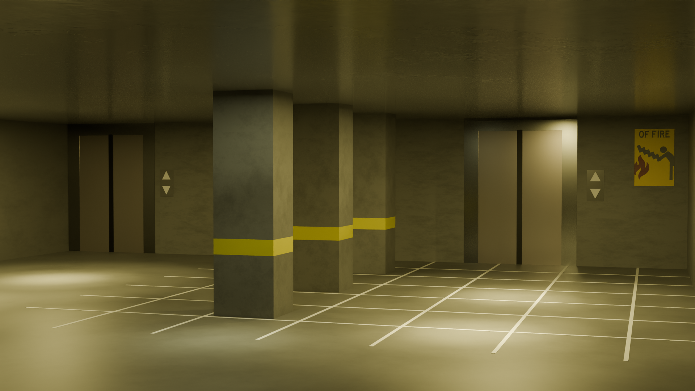
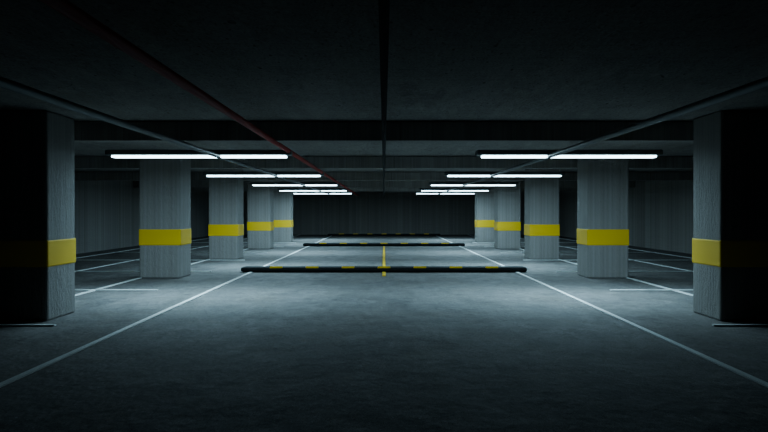
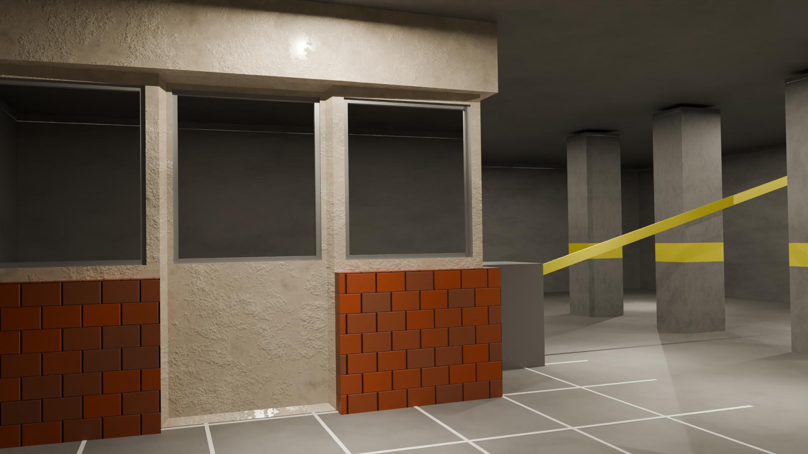
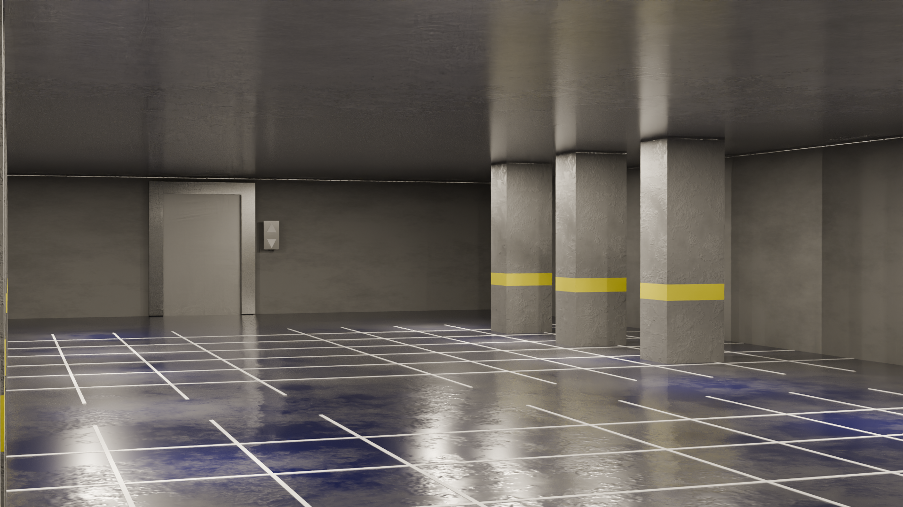
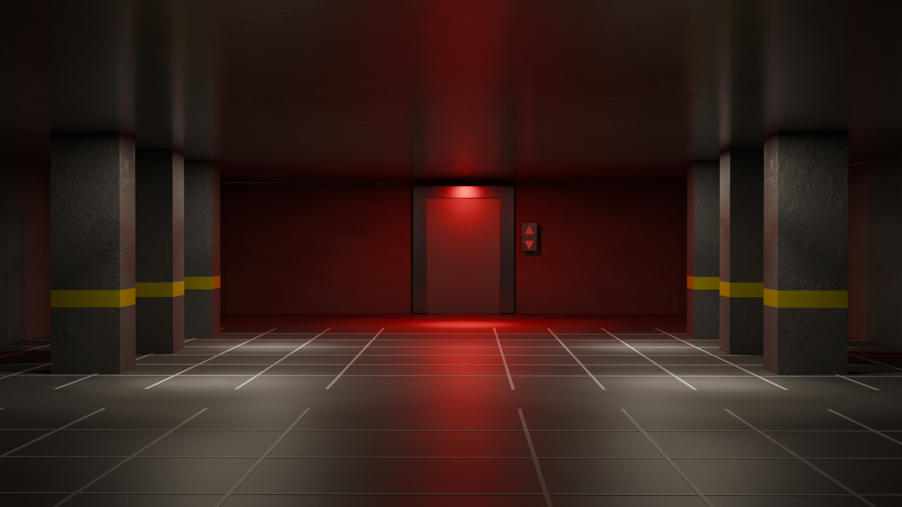
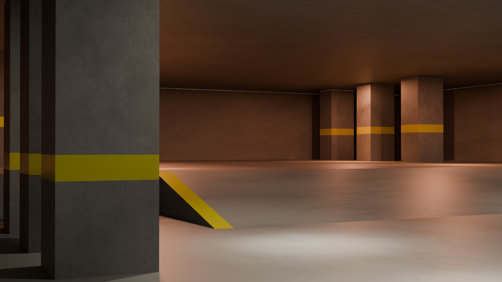
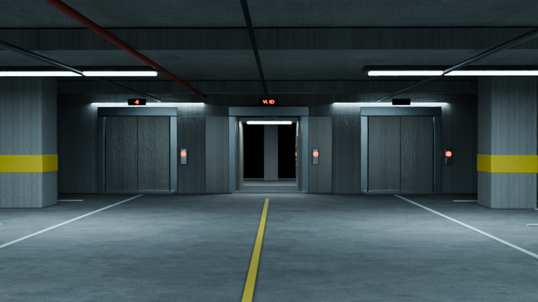
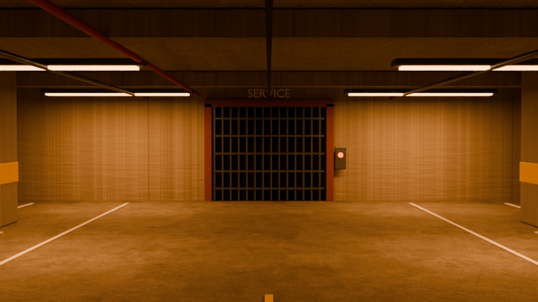
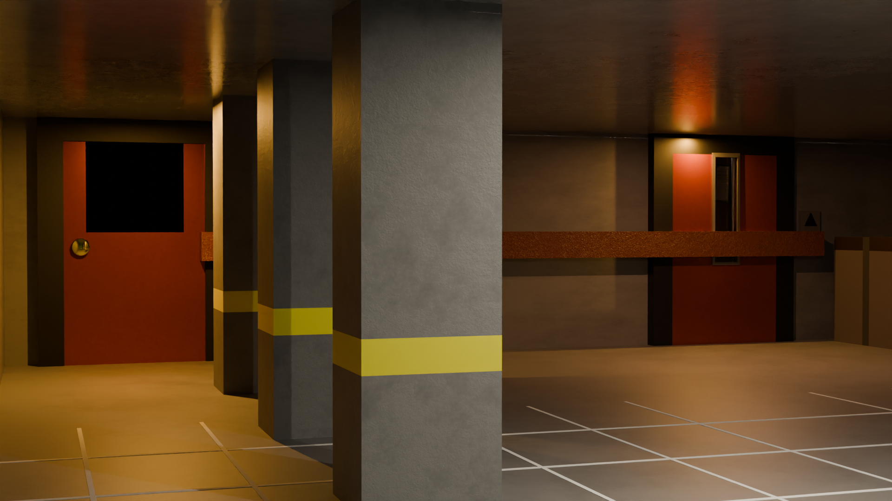
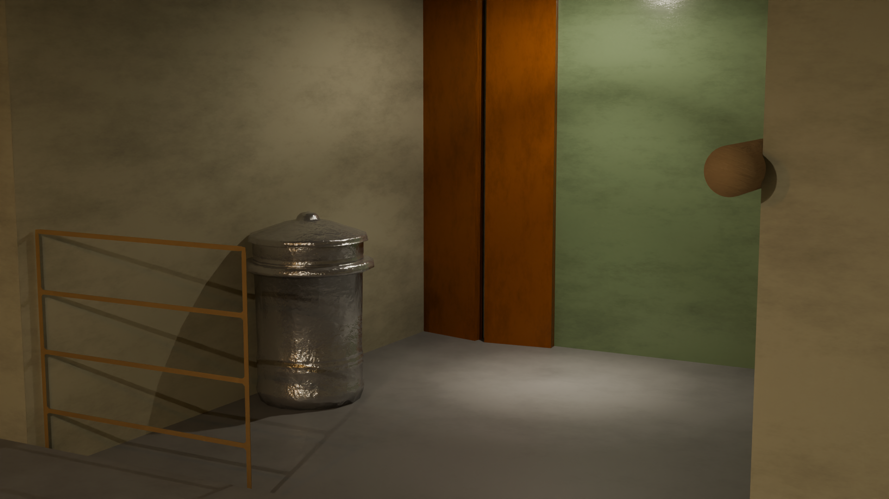
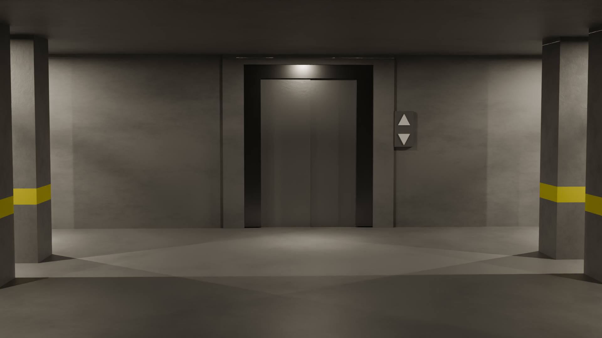
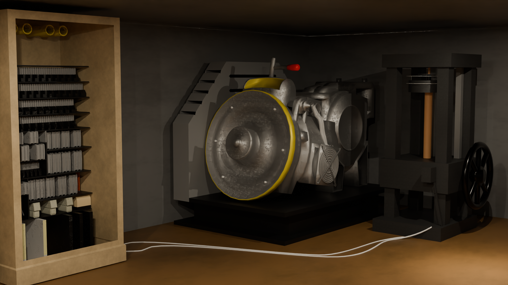
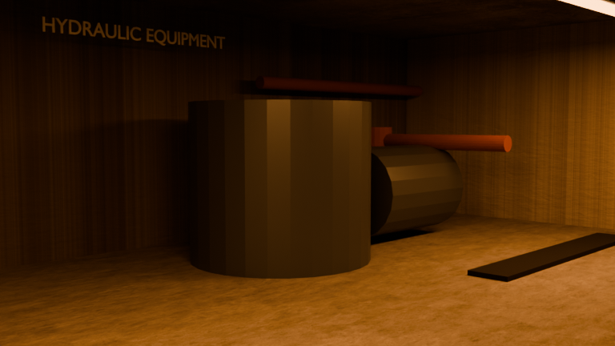
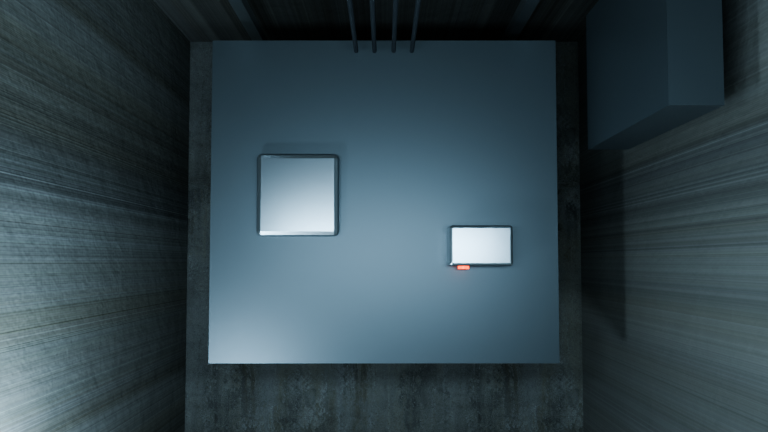
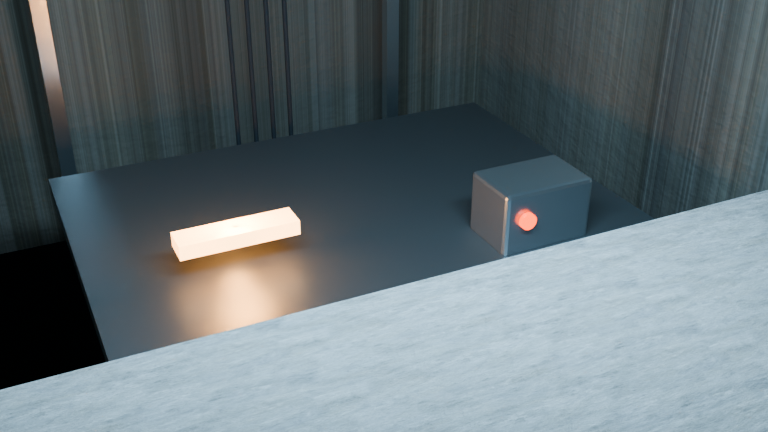
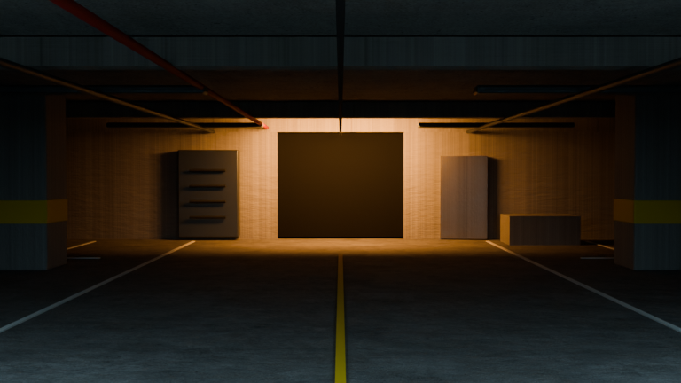
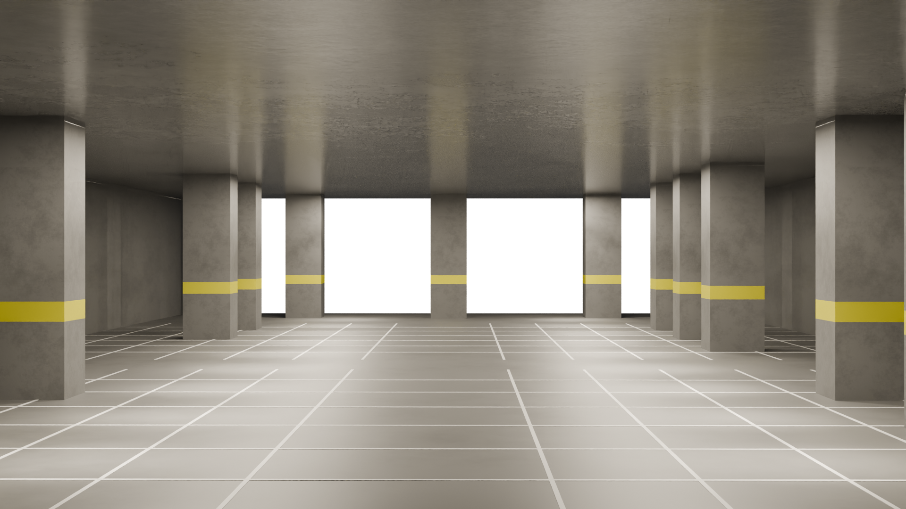
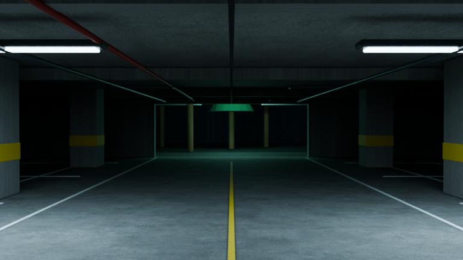
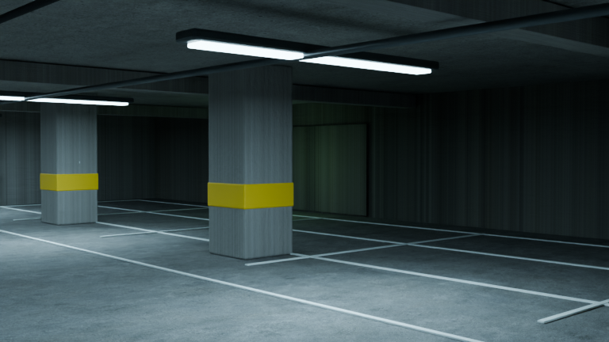
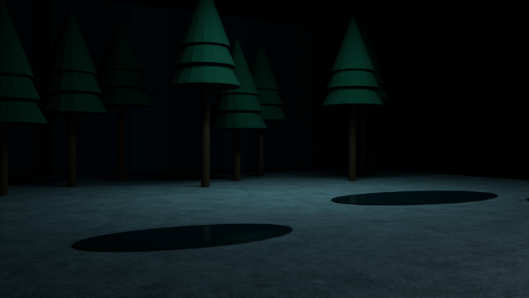
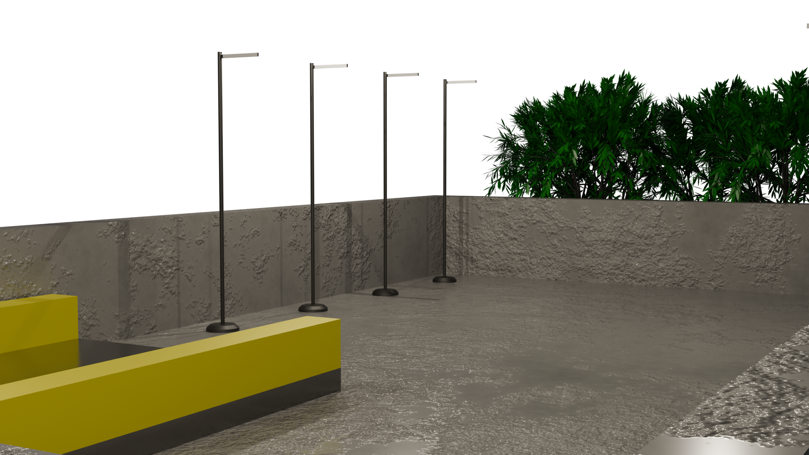
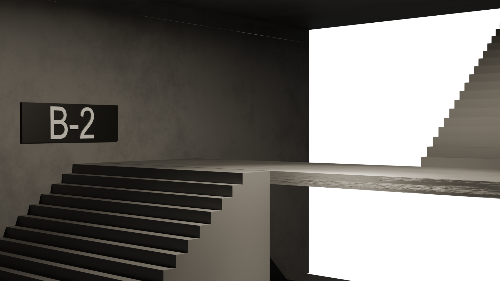
Bureau Notes
TITLE: THE BROKEN & MIXED PARKING GARAGE
MAP STATUS: UNRELIABLE
PERMANENT OUTPOSTS: NONE DOCUMENTED
CONVENTIONAL ENTITY COUNT: NONE CONFIRMED
PRIMARY HAZARD: STRUCTURAL / ROUTE INSTABILITY
RECOMMENDATION: DO NOT RELY ON PREVIOUS FLOOR PLANS
External level names and route references may be expanded as this original archive grows. This dossier was written for the Threshold Survey Bureau, an independent fan archive, and is not an official article from another Backrooms wiki.